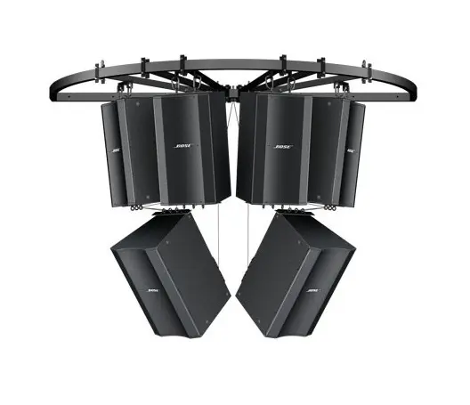

Акустические системы
Более 40 лет громкоговорители Bose Professional демонстрируют непревзойденное качество и точность звукопередачи. Массивы DeltaQ позволяют управлять зоной звукового покрытия с максимально возможным качеством звука и чистотой вокала. Звуковые колонны обеспечивают широкое горизонтальное покрытие малых и средних акустических пространств. Громкоговорители фонового и переднего плана идеально подойдут для конференц-залов, отелей, спортивных клубов, магазинов.